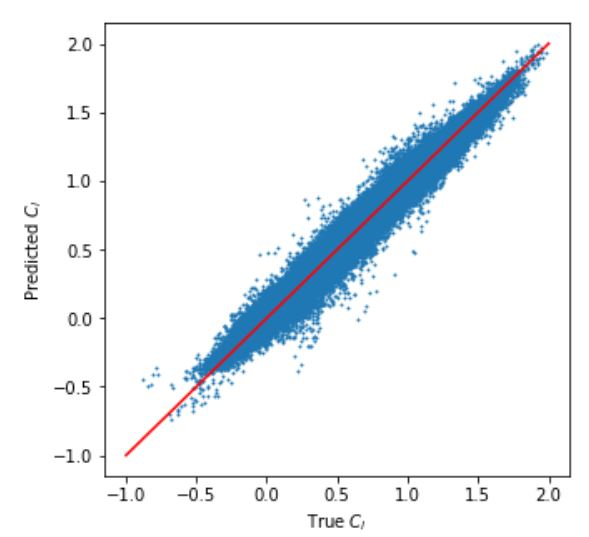
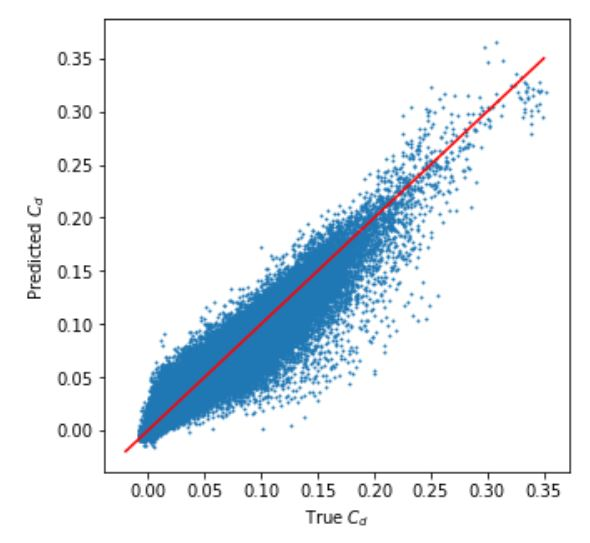
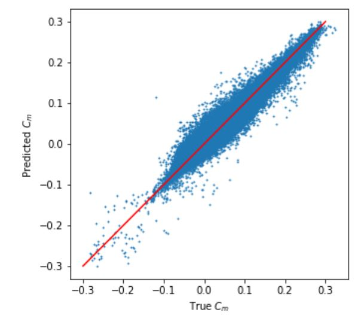

Using a CNN and Fourier Transform to Predict Airfoil Force Coefficients
This project is in progress. Research is currently being done in the CFD Lab at UC Berkeley.The convolutional neural network (CNN) is a powerful tool used in complex learning tasks. Recent work has shown that the CNN, most commonly used in image classification tasks, can also be applied to engineering design problems, including airfoil design. One challenge in implementing the CNN for airfoils is choosing a parameterization technique that sufficiently captures geometric information at the airfoil's boundary, where the most important physical phenomena happen. The goal of this project is to implement a Fourier transform parameterization technique and train a CNN to predict force coefficients on two dimensional airfoils. The CNN in its current state can achieve high r2 scores, but improvements to the network architecture can lead to more accurate results. The results are proof of concept that the CNN coupled with the proposed Fourier transform parameterization can produce high prediction accuracies.
  
SAE West Competition Airplane
Every year, UC Berkeley's ASAE team, designs and manufactures remote controlled airplanes for the international SAE West competition. Design begins with engineering analysis to choose airfoils for the wing and empennage and determine the geometries of each part of the plane. Next, we build and test fly prototypes of our planes. From the prototype flight data and after more analysis, we finalize our design and build two airplanes for the competition.
2017As the empennage design lead, my focus was on the stability of the airplane. For this year's plane, Cal-5, I designed a fuselage-mounted tail that provided stability as well as pitch and yaw control to the airplane during its flight. I managed the design, prototyping, and manufacturing of the empennage and trained subteam members on design and building techniques for the tail. During the design phase, we used SolidWorks to CAD the tail components and ANSYS for CFD analysis. Balsa was used for the tail's ribs and sheeting, while spruce was used for its spars and servo mounts. The tail is covered in Monokote for an aerodynamic surface.
Cal-5 placed fifth in flight at the SAE West Competition in March 2017. We were all very proud to see our hard work take off!
2016Affectionately called AirBears and CalVisitor after our school Wi-Fi networks, our competition planes had a nine-foot wing, a three-vertical-stabilizer empennage, and a conventional fuselage. We placed 29th in the regular class competition, and this was our 2nd year of competing.
As part of the empennage subteam this year, I was involved in the early stages of design up to manufacturing our final competition planes. I modeled empennage designs with SolidWorks, prepared parts them for laser cutting with Adobe Illustrator, and employed my woodworking skills in assembling the plane.
Ichiban
Design Innovation 22 ProjectIchiban is a crawling and wiggling robot that is controlled via Bluetooth. The robot, made of laser cut wood, moves primarily by pushing itself across the floor with its arm, which moves via a high-torque servo motor. It can also move by "wiggling" via a continuous servo motor attached to the robot's base, which is also how it turns. The code and electronics were done with Arduino and an Adafruit Bluefruit LE SPI Friend.
CalCase
E 27 Design ProjectThe CalCase is a phone case that holds a credit card that slides in and out of the case, an ID card that fits in a clear rubber sleeve, and a key ring in a holder at the top of the case.
Through this project, we learned about the steps of the manufacturing process, from design to tolerancing to additively processing the components.
We consulted the machinist's handbook to select fits for each component. The case was modeled using SolidWorks and manufactured using the Objet 3D printer.
Click here to view our project poster.
OrthoSlap
E 25 Design ProjectOrthoslap is a die and cards matching game designed to introduce engineering students to the concepts of orthographic projection and multiview engineering drawings. The game aims to strengthen 3D visualization skills while also encouraging interaction and communication between peers.
Each set of Orthoslap consists of one 2x2x2 inch master die, 6 sets of 6 cards corresponding to each face of the die, and 6 mini dice for each player to aid visualization. Gameplay consists of each player "slapping" down the correct top view to each roll of the master die. The dice were modeled using SolidWorks and AutoCad and manufactured with a 3D printer. The cards were drawn with AutoCad and designed with Photoshop.
Project poster
Project report
Game instructions